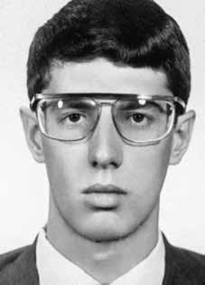

Flávio
Carvalho
Molina
CIRCUNSTÂNCIAS DA MORTE
Flávio Carvalho Molina morreu em circunstâncias ainda não totalmente esclarecidas. Provavelmente foi preso no dia 6 de novembro de 1971, em São Paulo, por agentes do Destacamento de Operações de Informações – Centro de Operações de Defesa Interna de São Paulo (DOI/CODI-SP), onde foi torturado até a morte no dia seguinte, como afirma o relatório da CEMDP.
A família soube da morte de Flávio em 29 de agosto de 1972, quando jornais a noticiaram. A notícia sobre a votação do recurso de apelação dos militantes envolvidos no sequestro do embaixador alemão Von Holleben citava, na última linha, que Flávio teria morrido durante “choques com as forças de segurança”, sem prestar mais esclarecimentos. Nesse momento, a família de Flávio deu início a buscas em diversos órgãos, quartéis, prisões, hospitais e necrotérios. De todos eles, obteve respostas negativas. Como sua prisão não foi admitida pelo Estado, Flávio continuou a ser processado como revel.
O delegado Romeu Tuma, diretor geral de Polícia do Departamento de Ordem Política e Social de São Paulo (DOPS/SP), no dia 7 de agosto de 1978, encaminhou à 2ª Auditoria de Marinha da 1ª Circunscrição Judiciária Militar a informação de que Flávio Carvalho Molina foi preso em 6 de novembro de 1971 e faleceu em 7 de novembro de 1971, sustentando que a morte teria ocorrido durante uma fuga. Constava também cópia de atestado de óbito lavrado em nome de Álvaro Lopes Peralta, nome falso sob o qual foi enterrado no cemitério de Perus, em 9 de novembro de 1971.
Em 12 de setembro de 1978, a Justiça Militar reconheceu a morte de Flávio, ao extinguir sua punibilidade devido ao seu falecimento, para o qual atribuiu a data de 7 de novembro de 1971. De acordo com Gilberto Molina, irmão de Flávio, em depoimento à Comissão Justiça e Paz, José Carlos Gianini e a advogada Maria Luiza Bierrembach, presos que estiveram no DOI-CODI de São Paulo, informaram que viram Flávio no local no dia 4 de novembro daquele ano, o que demonstra que, ao contrário do que dizia a versão oficial, Flávio já estava nas dependências do DOI-CODI quando morreu.
Em boletim informativo confidencial do Serviço de Polícia do III Exército consta a informação de que Flávio morrera no dia 5 de novembro de 1971. Em documento assinado pelo delegado de Polícia doutor Renato D’Andréia, consta que o capitão Pedro Ivo Moézia de Lima compareceu perante o delegado para apresentar “o material apreendido em poder de FLAVIO CARVALHO MOLINA ‘Álvaro Lopes Peralta’”. Esse documento demonstra que os agentes a serviço da repressão já tinham conhecimento sobre a real identidade de Flávio, enterrando-o com nome falso de forma proposital.
Despacho de 17 de julho de 1972, do delegado da Delegacia Especializada de Ordem Política e Social Edsel Magnotti, sobre o laudo necroscópico de Flávio, igualmente demonstra ciência sobre o nome real de Flávio, que havia sido sepultado com o nome falso de Álvaro Lopes Peralta. O exame necroscópico foi realizado pelo Instituto Médico-Legal (IML) no dia 7 de novembro de 1971, pelos médicos-legistas Renato Capellano e José Henrique da Fonseca, e assinado no dia 16 do mesmo mês. O nome que consta é o de Álvaro Lopes Peralta.
O laudo atesta dois “ferimentos pérfuro-contusos” causados por projéteis de arma de fogo na região do tórax, e conclui que a morte foi ocasionada por “anemia aguda consecutiva a hemorragia interna traumática”. Sua certidão de óbito informa que a morte teria ocorrido nas esquinas das ruas Padre Marchetti e Xavier de Almeida, no bairro do Ipiranga, em São Paulo; e o seu sepultamento no cemitério de Perus, nome dado ao cemitério Dom Bosco, criado em 1971.
Em documento expedido pelo comissário de polícia Jorge José Marques Sobrinho ao delegado da delegacia do DOPS/SP, em 24 de março de 1972, a informação é a de que Flávio teria morrido ao ser “abatido a tiros” na cidade. Gilberto Molina informou ainda que, em 1981, dirigiu-se ao cemitério de Perus e, no livro de registro de óbitos de indigentes, localizou o nome Álvaro Lopes Peralta, apresentando como data de enterro 9 de novembro 1971. Entretanto, não foi possível resgatar os restos mortais, pois em 1976 a ossada havia sido transferida para uma vala clandestina, onde foram enterrados os cadáveres de pessoas não identificadas, indigentes e vítimas da repressão política, conhecida como vala de Perus.
Em 1990, a vala foi descoberta e encontradas 1.049 ossadas, entre as quais estaria a de Flávio Carvalho Molina. Após a identificação, os restos mortais de Flávio foram trasladados para o cemitério São João Batista, no Rio de Janeiro. Entretanto, ainda que a identificação e traslado tenham se concluído, a negligência em relação à identificação das ossadas encontradas no cemitério, por parte da Universidade Estadual de Campinas (Unicamp), Universidade de São Paulo (USP) e Universidade Federal de Minas Gerais (UFMG), fizeram com que o Ministério Público Federal (MPF) entrasse com uma ação contra as instituições e cinco peritos.
Na interpretação do MPF, tanto as instituições quanto os profissionais seriam responsáveis por quebrar o pacto de ação pela identificação das ossadas de Flávio Carvalho Molina e Luiz José da Cunha. Em 2005, o governo brasileiro, através da CEMDP, enviou ao Laboratório Genomic, em São Paulo, amostras da família Molina e da ossada de Flávio. Sob a responsabilidade da doutora Delnice Ritsuko Sumita, as ossadas foram identificadas como de Flávio Molina. A Comissão Nacional da Verdade (CNV) considera que Flávio Carvalho Molina permaneceu desaparecido entre a data da morte, em 1971, e a plena identificação de seus restos mortais, em 2005.
Em 25 de setembro de 2008, o MPF requisitou, com base em representação elaborada pelos procuradores da República Eugênia Augusta Gonzaga Fávero e Marlon Alberto Weichert, a abertura de inquérito policial para investigar os crimes cometidos contra Flávio Carvalho Molina. A representação aponta como prováveis autores: 1) de sequestro e homicídio com uso de meio cruel (tortura): Carlos Alberto Brilhante Ustra e Miguel Fernandes Zaninello; 2) de falsidade ideológica: Arnaldo Siqueira, Renato Cappellano e José Henrique da Fonseca, além de Ustra e Zaninello. O MPF requereu o arquivamento do inquérito, em maio de 2010, sob o argumento de que teria ocorrido prescrição punitiva.
Flávio Carvalho Molina died under circumstances that are not yet fully understood. He was probably arrested on November 6, 1971, in São Paulo, by agents from the Information Operations Detachment – São Paulo Internal Defense Operations Center (DOI/CODI-SP), where he was tortured to death the following day, as stated in the CEMDP report.
The family learned of Flávio's death on August 29, 1972, when newspapers reported it. The news about the vote on the appeal of the militants involved in the kidnapping of the German ambassador Von Holleben mentioned, in the last line, that Flávio had died during “clashes with the security forces”, without providing further clarification. At that moment, Flávio's family began searching various agencies, barracks, prisons, hospitals and morgues. From all of them, he received negative responses. As his arrest was not admitted by the State, Flávio continued to be prosecuted in default.
Delegate Romeu Tuma, general director of Police of the Department of Political and Social Order of São Paulo (DOPS/SP), on August 7, 1978, forwarded to the 2nd Marine Audit of the 1st Military Judicial Circuit the information that Flávio Carvalho Molina was arrested on November 6, 1971 and died on November 7, 1971, maintaining that the death had occurred during an escape. There was also a copy of the death certificate drawn up in the name of Álvaro Lopes Peralta, the false name under which he was buried in the Perus cemetery, on November 9, 1971.
On September 12, 1978, the Military Justice recognized Flávio's death, by extinguishing his punishment due to his death, to which it assigned the date of November 7, 1971. According to Gilberto Molina, Flávio's brother, in testimony to the Justice and Peace Commission, José Carlos Gianini and lawyer Maria Luiza Bierrembach, prisoners who were at DOI-CODI in São Paulo, reported that they saw Flávio at the scene in on November 4th of that year, which shows that, contrary to what the official version said, Flávio was already on the DOI-CODI premises when he died.
A confidential newsletter from the Police Service of the Third Army contained information that Flávio had died on November 5, 1971. In a document signed by Police Chief Dr. Renato D’Andréia, it was stated that Captain Pedro Ivo Moézia de Lima appeared before the police chief to present “the material seized in the possession of FLAVIO CARVALHO MOLINA ‘Álvaro Lopes Peralta’”. This document demonstrates that the agents working for repression already had knowledge of Flávio's real identity, purposely burying him under a false name.
Dispatch of July 17, 1972, from the delegate of the Specialized Police Station for Political and Social Order Edsel Magnotti, regarding Flávio's autopsy report, also demonstrates awareness of Flávio's real name, who had been buried under the false name of Álvaro Lopes Peralta. The necroscopic examination was carried out by the Instituto Médico-Legal (IML) on November 7, 1971, by coroners Renato Capellano and José Henrique da Fonseca, and signed on the 16th of the same month. The name listed is Álvaro Lopes Peralta.
The report certifies two “blunt injuries” caused by firearm projectiles in the chest region, and concludes that death was caused by “acute anemia following traumatic internal bleeding”. His death certificate states that the death occurred on the corners of Padre Marchetti and Xavier de Almeida streets, in the Ipiranga neighborhood, in São Paulo; and his burial in the Perus cemetery, the name given to the Dom Bosco cemetery, created in 1971.
In a document issued by police commissioner Jorge José Marques Sobrinho to the DOPS/SP police chief, on March 24, 1972, the information is that Flávio had died after being “shot down” in the city. Gilberto Molina also reported that, in 1981, he went to the Perus cemetery and, in the book registering deaths of indigents, located the name Álvaro Lopes Peralta, presenting the burial date as November 9, 1971. However, it was not possible to rescue the mortal remains, as in 1976 the bones had been transferred to a clandestine grave, where the bodies of unidentified people, indigents and victims of the political repression, known as the Perus ditch.
In 1990, the grave was discovered and 1,049 bones were found, including that of Flávio Carvalho Molina. After identification, Flávio's remains were transferred to the São João Batista cemetery, in Rio de Janeiro. However, even though the identification and transfer were completed, the negligence in relation to the identification of the bones found in the cemetery, on the part of the State University of Campinas (Unicamp), the University of São Paulo (USP) and the Federal University of Minas Gerais (UFMG), led the Federal Public Ministry (MPF) to file a lawsuit against the institutions and five experts.
In the MPF's interpretation, both institutions and professionals would be responsible for breaking the action pact by identifying the remains of Flávio Carvalho Molina and Luiz José da Cunha. In 2005, the Brazilian government, through CEMDP, sent samples of the Molina family and Flávio's remains to the Genomic Laboratory, in São Paulo. Under the responsibility of Dr. Delnice Ritsuko Sumita, the bones were identified as those of Flávio Molina. The National Truth Commission (CNV) considers that Flávio Carvalho Molina remained missing between the date of his death, in 1971, and the full identification of his remains, in 2005.
On September 25, 2008, the MPF requested, based on a representation prepared by public prosecutors Eugênia Augusta Gonzaga Fávero and Marlon Alberto Weichert, the opening of a police investigation to investigate the crimes committed against Flávio Carvalho Molina. The representation points to the following as likely perpetrators: 1) of kidnapping and homicide using cruel means (torture): Carlos Alberto Brilhante Ustra and Miguel Fernandes Zaninello; 2) of ideological falsehood: Arnaldo Siqueira, Renato Cappellano and José Henrique da Fonseca, in addition to Ustra and Zaninello. The MPF requested the investigation be closed in May 2010, on the grounds that there had been a punitive prescription.
Flávio Carvalho Molina murió en circunstancias que aún no se comprenden del todo. Probablemente fue detenido el 6 de noviembre de 1971, en São Paulo, por agentes del Destacamento de Operaciones de Información – Centro de Operaciones de Defensa Interna de São Paulo (DOI/CODI-SP), donde fue torturado hasta la muerte al día siguiente, según consta en el informe del CEMDP.
La familia se enteró de la muerte de Flávio el 29 de agosto de 1972, cuando los periódicos la informaron. La noticia sobre la votación sobre el recurso de apelación de los militantes implicados en el secuestro del embajador alemán Von Holleben mencionaba, en la última línea, que Flávio había muerto durante “enfrentamientos con las fuerzas de seguridad”, sin dar más aclaraciones. En ese momento, la familia de Flávio comenzó a registrar varias agencias, cuarteles, prisiones, hospitales y morgues. De todos ellos recibió respuestas negativas. Como su detención no fue admitida por el Estado, Flávio continuó siendo procesado en rebeldía.
El delegado Romeu Tuma, director general de Policía del Departamento de Orden Político y Social de São Paulo (DOPS/SP), el 7 de agosto de 1978, remitió a la 2.ª Auditoría Marítima del 1.º Circuito Judicial Militar la información de que Flávio Carvalho Molina fue detenido el 6 de noviembre de 1971 y fallecido el 7 de noviembre de 1971, sosteniendo que la muerte había ocurrido durante una fuga. También se encontraba copia del acta de defunción levantada a nombre de Álvaro Lopes Peralta, nombre falso con el que fue enterrado en el cementerio de Perus, el 9 de noviembre de 1971.
El 12 de septiembre de 1978, la Justicia Militar reconoció la muerte de Flávio, extinguiendo la pena por su muerte, a la que asignó la fecha del 7 de noviembre de 1971. Según Gilberto Molina, hermano de Flávio, en testimonio ante la Comisión de Justicia y Paz, José Carlos Gianini y la abogada Maria Luiza Bierrembach, presos que se encontraban en el DOI-CODI de São Paulo, informaron que vieron a Flávio en el lugar en noviembre. 4 de ese año, lo que demuestra que, contrariamente a lo que decía la versión oficial, Flávio ya se encontraba en las instalaciones del DOI-CODI cuando falleció.
Un boletín confidencial del Servicio de Policía del Tercer Ejército contenía información que Flávio había muerto el 5 de noviembre de 1971. En un documento firmado por el jefe de policía Dr. Renato D'Andréia, se afirmaba que el capitán Pedro Ivo Moézia de Lima se presentó ante el jefe de policía para presentar "el material incautado en posesión de FLAVIO CARVALHO MOLINA 'Álvaro Lopes Peralta'". Este documento demuestra que los agentes que trabajaban para la represión ya tenían conocimiento de la verdadera identidad de Flávio, enterrandolo deliberadamente con un nombre falso.
El despacho del 17 de julio de 1972 del delegado de la Comisaría Especializada en Orden Político y Social, Edsel Magnotti, sobre el informe de la autopsia de Flávio, demuestra también el conocimiento del verdadero nombre de Flávio, que había sido enterrado con el nombre falso de Álvaro Lopes Peralta. El examen necroscópico fue realizado por el Instituto Médico-Legal (IML) el 7 de noviembre de 1971, por los médicos forenses Renato Capellano y José Henrique da Fonseca, y firmado el 16 del mismo mes. El nombre que figura es Álvaro Lopes Peralta.
El informe certifica dos “heridas contundentes” causadas por proyectiles de arma de fuego en la región del tórax y concluye que la muerte fue causada por “anemia aguda tras una hemorragia interna traumática”. Su certificado de defunción señala que el fallecimiento ocurrió en las esquinas de las calles Padre Marchetti y Xavier de Almeida, en el barrio de Ipiranga, en São Paulo; y su entierro en el cementerio de Perus, nombre que recibe el cementerio Dom Bosco, creado en 1971.
En un documento emitido por el comisario de policía Jorge José Marques Sobrinho al jefe de policía del DOPS/SP, el 24 de marzo de 1972, se informa que Flávio había muerto después de haber sido “derribado” en la ciudad. Gilberto Molina también relató que, en 1981, acudió al cementerio de Perus y, en el libro de registro de defunciones de indigentes, ubicó el nombre de Álvaro Lopes Peralta, presentando como fecha de entierro el 9 de noviembre de 1971. Sin embargo, no fue posible rescatar los restos mortales, pues en 1976 los huesos habían sido trasladados a una fosa clandestina, donde se encontraban los cuerpos de personas no identificadas, indigentes y víctimas de la represión política, conocidos como la acequia de Perus.
En 1990, se descubrió la tumba y se encontraron 1.049 huesos, incluido el de Flávio Carvalho Molina. Luego de la identificación, los restos de Flávio fueron trasladados al cementerio de São João Batista, en Río de Janeiro. Sin embargo, aunque la identificación y el traslado se completaron, la negligencia en la identificación de los huesos encontrados en el cementerio, por parte de la Universidad Estadual de Campinas (Unicamp), la Universidad de São Paulo (USP) y la Universidad Federal de Minas Gerais (UFMG), llevó al Ministerio Público Federal (MPF) a presentar una demanda contra las instituciones y cinco peritos.
En la interpretación del MPF, tanto las instituciones como los profesionales serían responsables de romper el pacto de acción al identificar los restos de Flávio Carvalho Molina y Luiz José da Cunha. En 2005, el gobierno brasileño, a través del CEMDP, envió muestras de la familia Molina y de los restos de Flávio al Laboratorio de Genómica, en São Paulo. Bajo la responsabilidad de la doctora Delnice Ritsuko Sumita, los huesos fueron identificados como los de Flávio Molina. La Comisión Nacional de la Verdad (CNV) considera que Flávio Carvalho Molina permaneció desaparecido entre la fecha de su muerte, en 1971, y la identificación completa de sus restos, en 2005.
El 25 de septiembre de 2008, el MPF solicitó, con base en un escrito elaborado por los fiscales Eugênia Augusta Gonzaga Fávero y Marlon Alberto Weichert, la apertura de una investigación policial para investigar los crímenes cometidos contra Flávio Carvalho Molina. La representación señala como probables autores a: 1) de secuestro y homicidio con medios crueles (tortura): Carlos Alberto Brilhante Ustra y Miguel Fernandes Zaninello; 2) de falsedad ideológica: Arnaldo Siqueira, Renato Cappellano y José Henrique da Fonseca, además de Ustra y Zaninello. El MPF solicitó el cierre de la investigación en mayo de 2010, por considerar que había existido prescripción punitiva.